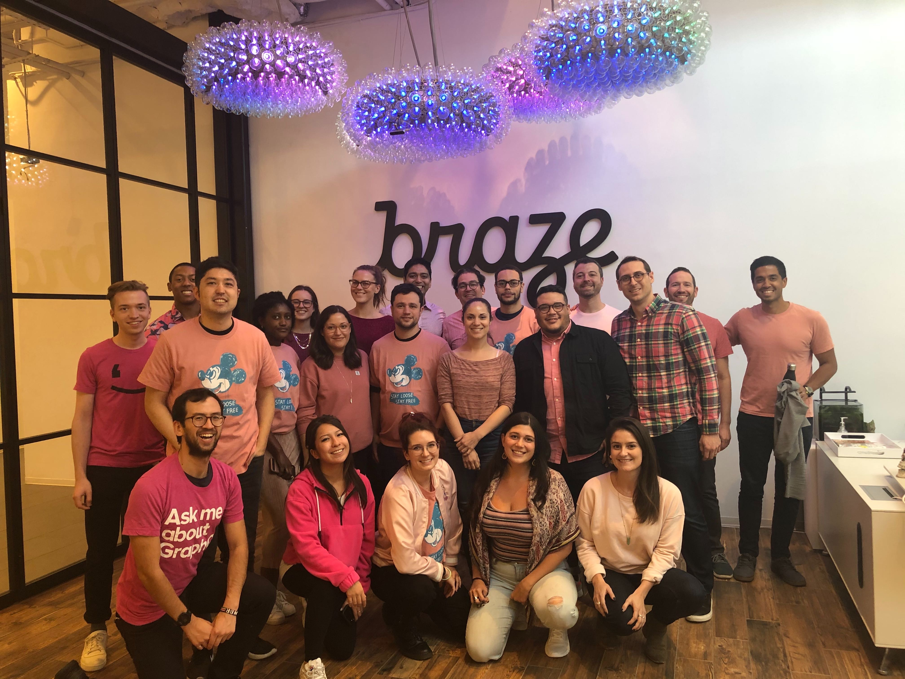
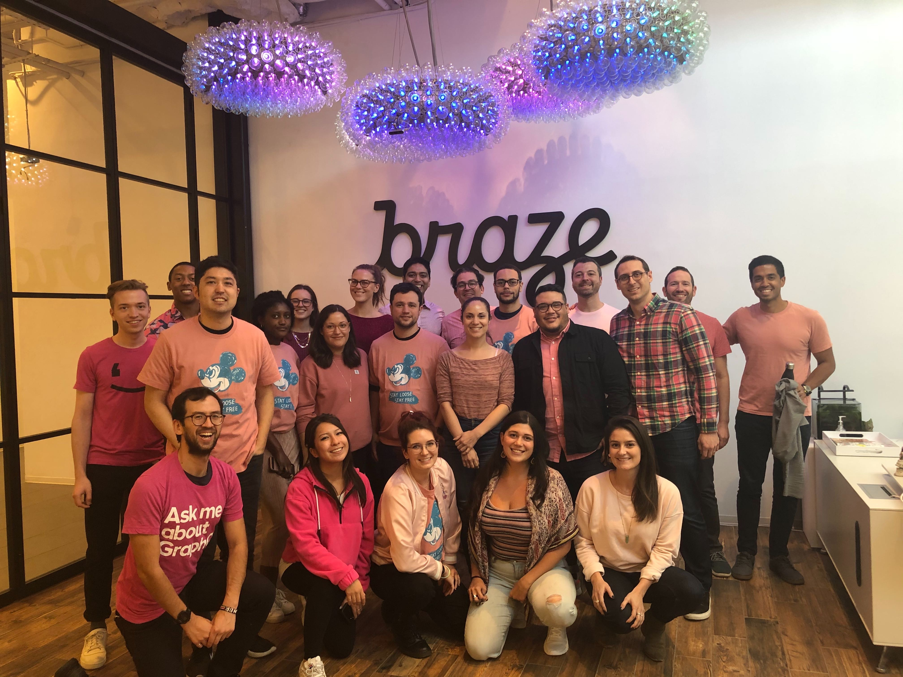

Why Braze? Is something I got asked while interviewing candidates a lot. To be honest, I'd say, I just wanted to move out of the Bay Area and NYC was my first choice and Braze was the first company that gave me an offer. But that led to the best first job out of college one could ever ask for. Rarely did I ever really dread going to work the next day and this was due to the people and the work itself. But the most important part of this were the people. Not only were they very smart but they were also kind. They taught and supported me without ever judging. They cared about not only my professional development but also personal. In those early Braze days when we were smaller and worked from the office especially my coworkers became some of my closest friends and we'd hang out after work hours at happy hours, kickball, and brunches. I'm not necessarily looking for that sort of work place anymore but at the time as an early to mid 20s something in NYC, it was amazing.
Moreover, the work I was doing was valued and important. From the first week I was pushing code out into prod. I was encouraged to explore technologies I wasn't familiar with and entrusted with more and more responsibilities. I was blessed with good managers. While marketing engagement was not my passion, the kinds of problems we were facing were engaging and work rarely felt boring or monotonous. Due to the complex nature of the Braze product I was learning a ton all across the stack. I thought a startup would mean long work hours but at Braze my work life balance was respected and mental health cared for.
Over the years the company grew and grew and teams restructured as a result. At first I was on the "Dashboard" team, where we primarily focused on frontend. Then we changed to full stack product focused teams and I was put on the Email team. Meanwhile we abandoned our waterfall-agile hybrid way of collaborating to something more agile. On the Email team I learned a lot about email marketing protocols and legislation, things like you must always have an email unsubscribe link, how to not make your email look like spam, what does an email bounce even mean, domain names, and IP Pools and became very familiar with Sendgrid and SparkPost. It was soon time for another team split and I decided to be on the SMS team, which was similar enough to email but still something new. So then I learned about SMS segments, link shortening, VCF cards, and phone number formatting and became familiar with Twilio and Infobip. At the end of my tenure we were at the cusp of another team split and so I also worked on the new WhatsApp channel, learning about all the deficiencies of the WhatsApp Cloud Platform API. While at the start of Braze I preferred frontend by the end I preferred the backend as I became more comfortable with Ruby and things like databases (Mongo, Postgres), Redis caching, Kafka streams, Fastly, and AWS, venturing further into infrastructure. Because we were now full stack product focused teams, I became proficient in not only the front and backend but also my product and design sense, figuring out what our customers really needed, and also a taste of managerial skills as I supported a summer intern and mentored new engineers. Braze was really a work place to mold a well rounded engineer. But I understood there was still a lot more to learn. Please see my resume for more specific projects I worked on.
But possibly the best thing I did at Braze was an incredibly technically simple search bar added for App Groups and a way to favorite App Groups to the user profile I did for a hack day which was met with great acclaim from the rest of the company and our customers. Even after my departure, I hear Braze still refers to this feature as a good productionized hack day example. This really exemplified for me that sometimes the most impactful solutions are the most simple.
Watching a company grow, I've seen the importance of internal information and documentation organization, the pain of transitioning to new technologies (KnockoutJS -> React migration), the pain of refactoring and convincing people its needed, adding new testing frameworks, agreeing on a set of standards, localizing a website into other languages, creating an official IRT system, making a good interview question, how to retain company culture during a pandemic, and more.
When I joined I never expected Braze to IPO. And the fact that it was one of those startups with a slim chance that did was really just a bonus to an already fulfilling career there. That day at Nasdaq among my peers who've been with me from day one was one of the proudest days of my life and I feel incredibly lucky to have experienced that.
But after 6 years I felt like it was time to go. Of course, the culture had changed being more remote and a bigger company in general. But there was nothing wrong per se. Just one of those gut feelings. I left on good terms with a lot of good memories and Braze T-shirts.
RELATED LINKS
A Day in the Life of a Software Engineer at Braze


 
